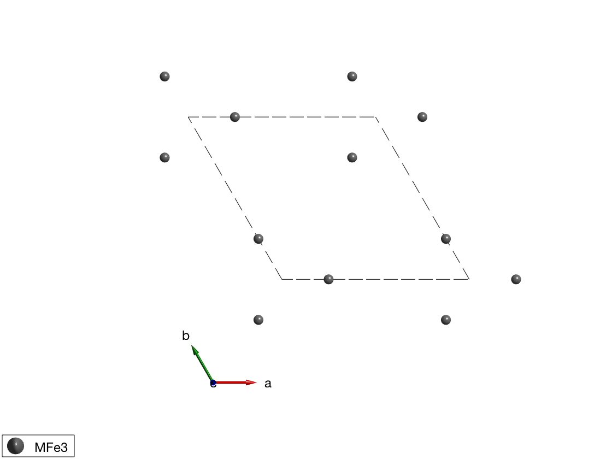
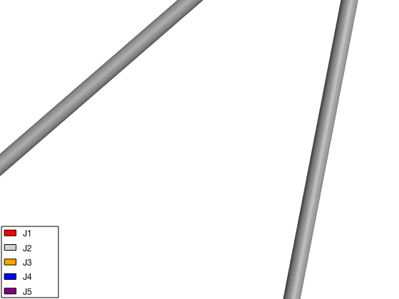
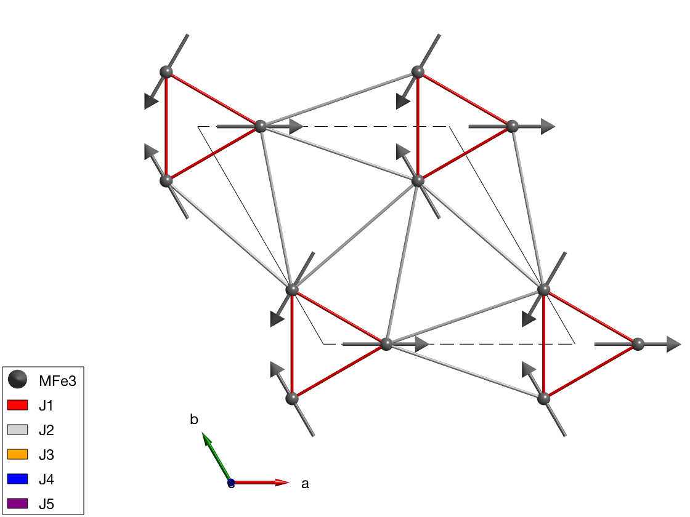
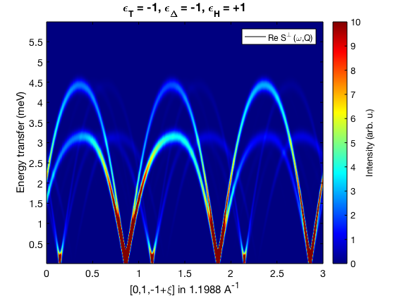
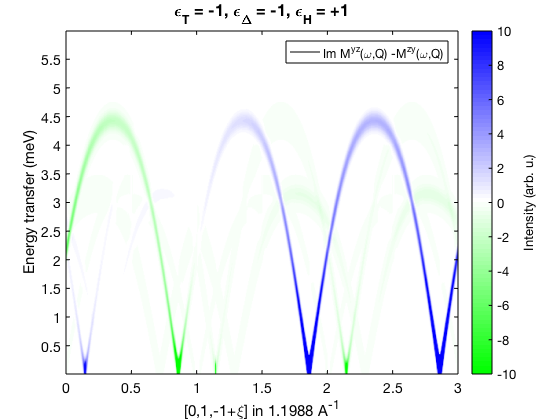

Spin wave spectrum of Ba3NbFe3Si2O14
Here we model the spin wave spectrum of Ba3NbFe3Si2O14 chiral compound. The crystal structure is taken from PRL 101, 247201 (2008), [[http://dx.doi.org/10.1103/PhysRevLett.101.247201]]. The spin wave model parameters are taken from PRL 106, 207201 (2011), [[http://dx.doi.org/10.1103/PhysRevLett.106.207201]].
Contents
Crystal structure
We define only the magnetic atoms in of the crystal that are Fe3+ ions with spin quantum number of 5/2.
banb = spinw; banb.fileid(0) banb.genlattice('lat_const',[8.539 8.539 5.2414],'angled',[90 90 120],'sym','P 3 2 1'); banb.addatom('label','MFe3','r',[0.24964 0 1/2],'S',5/2,'color','gray'); banb.gencoupling; plot(banb,'range',[-0.5 1.5;-0.5 1.5;0 0.5],'zoom',-0.5)
Chrality
We define three chiral properties of the crystal and magnetic order: * epsilon_T: crystal chirality, in our case we select J3-J5 interactions according to the chirality (J5>J3). * epsilon_Delta: Chirality of the triangular units. * epsilon_H: Sense of rotation of the spin helices along the c-axis (right handed rotation is positive). The three property are related: eT = eD*eH.
eD = -1; eH = +1; eT = eD*eH;
Magnetic Hamiltonian
We define the magnetic Hamiltonian depending on the epsilon_T crystal chirality. We neglect the Dzyaloshinskii-Moriya interaction, that can be introduced in a straightforward manner.
J1 = 0.85; J2 = 0.24; J3 = 0.053; J4 = 0.017; J5 = 0.24; banb.addmatrix('value',J1,'label','J1','color','red') banb.addmatrix('value',J2,'label','J2','color','lightgray') banb.addmatrix('value',J3,'label','J3','color','orange') banb.addmatrix('value',J4,'label','J4','color','b') banb.addmatrix('value',J5,'label','J5','color','purple') banb.addcoupling('mat','J1','bond',1) banb.addcoupling('mat','J2','bond',3) banb.addcoupling('mat','J4','bond',2) switch eT case +1 banb.addcoupling('mat','J3','bond',4) banb.addcoupling('mat','J5','bond',5) case -1 banb.addcoupling('mat','J3','bond',5) banb.addcoupling('mat','J5','bond',4) end plot(banb,'range',[-0.5 1.5;-0.5 1.5;0 0.5],'zoom',2)
Magnetic structure
We fix the magnetic structure with the predefined chirality. The magnetic ordering wave vector is k=(0,0,e_H*1/7), the spins are lying in the ab-plane and we use a single cell to describe the structure (default value of nExt = [1 1 1]). We plot the triangular plane magnetic structure.
S0 = [1 -1/2 -1/2;0 eD*sqrt(3)/2 -eD*sqrt(3)/2;0 0 0]; banb.genmagstr('mode','helical','S',S0,'k',[0 0 eH*1/7],'n',[0 0 1]) plot(banb,'range',[-0.5 1.5;-0.5 1.5;0 0.5],'sSpin',0.5)
Spin wave spectrum
We calculate the spin wave spectrum and compare it to published results. Since the momentum transfer vector Q has opposite sign in SpinW and in the published PRL paper, we change the sign manually here. Also for direct comparison, we calculate the spin-spin correlation function in the coordinate system commonly used for polarised neutron scattering (x||Q, z perpendicular to the scattering plane). To define the scattering plane, we give two reciprocal space vectors in that plane: u=(0,1,0) and v=(0,0,1).
banbSpec = banb.spinwave({[0 -1 1] [0 -1 -2] 500});
banbSpec.hkl = -banbSpec.hkl;
banbSpec.hklA = -banbSpec.hklA;
banbSpec = sw_neutron(banbSpec,'pol',true,'uv',{[0 1 0] [0 0 1]});
figure
banbSpec = sw_egrid(banbSpec,'component','Sperp','Evect',linspace(0,6,500));
sw_plotspec(banbSpec,'mode','color','dE',0.25,'axLim',[0 10]);
tString = sprintf('\\epsilon_T = %+d, \\epsilon_\\Delta = %+d, \\epsilon_H = %+d',eD,eT,eH);
title(tString,'fontSize',16)
colormap(jet)
 Chiral correlations
We plot the imaginary part of the spin-spin correlation function: Myz-Mzy that are components in the Q coordinate system, this agrees well with Fig. 5 of PRL 106, 207201 (2011).
figure banbSpec = sw_egrid(banbSpec,'component','Myz-Mzy','Evect',linspace(0,6,500)); sw_plotspec(banbSpec,'mode','color','dE',0.25,'axLim',[-10 10],'imag',true); tString = sprintf('\\epsilon_T = %+d, \\epsilon_\\Delta = %+d, \\epsilon_H = %+d',eD,eT,eH); title(tString,'fontSize',16) colormap(makecolormap([0 1 0],[1 1 1],[0 0 1],81));
Written by Sandor Toth 16-June-2014